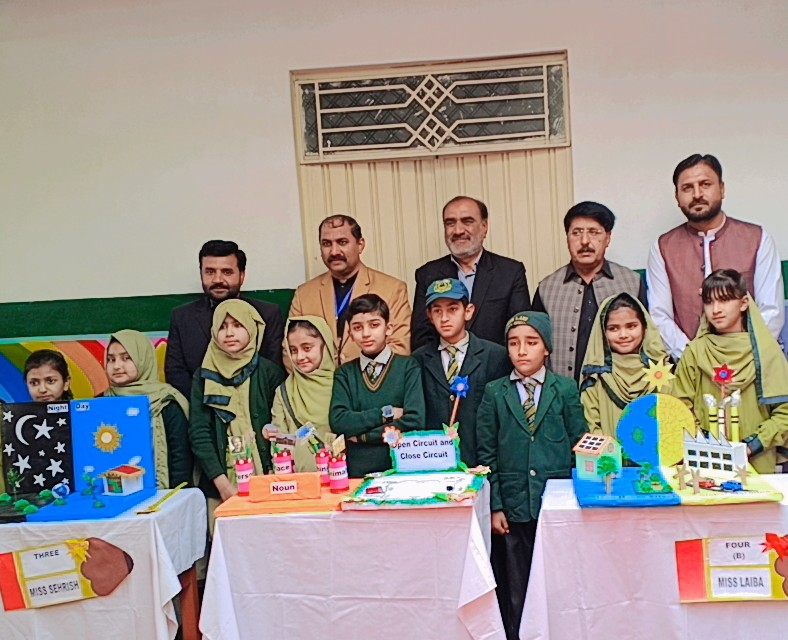
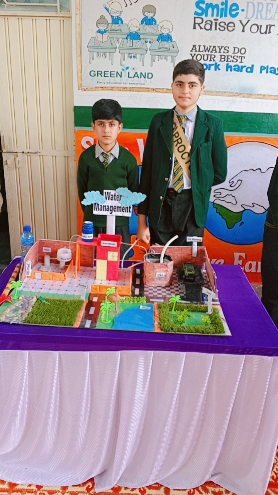
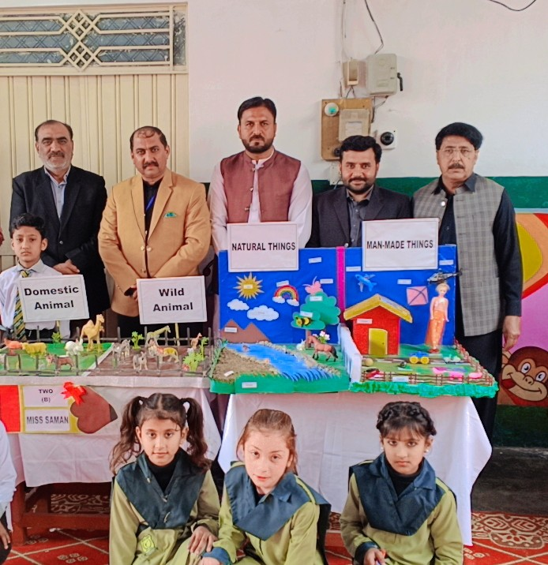

Our mission
To provide quality education in a safe and disciplined environment while developing students’ knowledge, confidence, character and skills.
GREEN LAND MODEL SCHOOL JAND
A welcoming school where children build knowledge, confidence and character—one discovery at a time.

WELCOME TO GREEN LAND
At Green Land Model School Jand, we believe every child has the potential to succeed. We provide quality education, strong values and a supportive environment for the overall development of our students.
MAKE · EXPLORE · GROW
From classroom questions to real projects, children learn by trying, making and sharing.

STUDENT PROJECTS
Think it.
Make it.
WHAT GUIDES US
To provide quality education in a safe and disciplined environment while developing students’ knowledge, confidence, character and skills.
To nurture confident, responsible and successful individuals who are prepared to contribute positively to society.
OUR CLASSES
From a first classroom hello through Grade 8, children grow with steady guidance and support.
COME MEET US
We’d be happy to help you learn more about Green Land and the right class for your child.
Haji Bazar Chowk, Tehsil Road, Jand